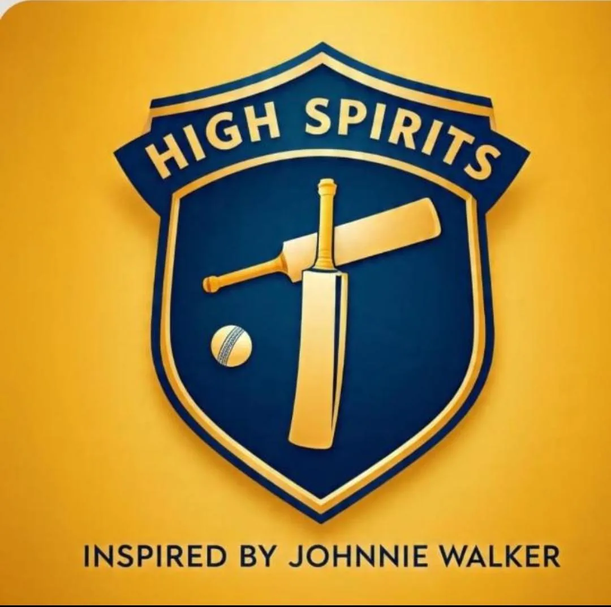
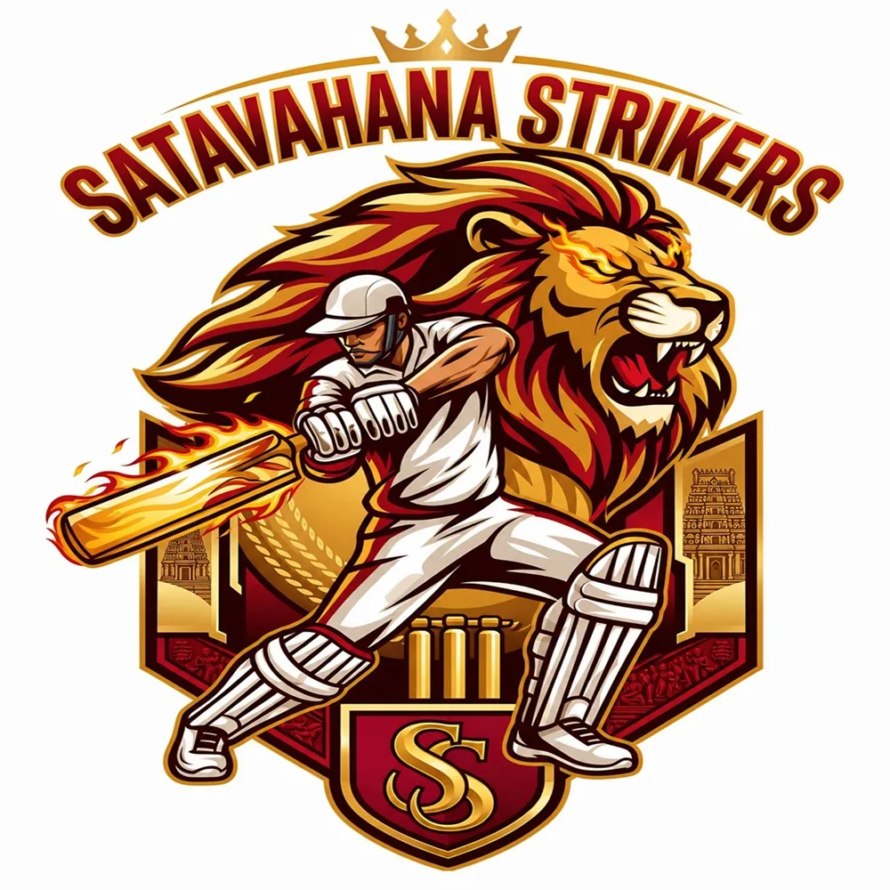

JPL Season 2 — Match HighlightsAction from the tournament
Tournament overview
Key information for the 2026 JPL edition.
Tournament dates30–31 May 2026
VenueGandhi Memorial School Ground
LocationKemayoran, Jakarta
On-field action & celebrations
Real JPL moments — from the first ball to the champions’ celebration.


Participating Teams
Meet the eight teams and their players from JPL Season 2, 2026.
SDAM United
Captain: Varun Rawat
TEAM SQUAD
- Aaditya Khambekar
- Arjun
- Gufran
- Harish Selavaganesan
- Jagdeep Singh
- Jamshed
- Kirubasankar Coimbatore Ramamoorthy
- Pallav Bhai Rasuna
- Pranav Singapuri
- Puneet Rasuna Jkt
- Ravi Ramaswamy
- Sidhant Petwal
- Varun Rawat
- Vineet Shah
- Vishal Uberoi JKT

High Spirits
Captain: Harsh Sadarangani

High Spirits Captain: Harsh SadaranganiTEAM SQUAD
- Armaan Arora
- Ashish
- Choudhary Imran Aslam
- Divit Nanda
- Gaurang Kapadia
- Harsh Sadarangani
- Hemal
- Karan Nan
- Nimesh Shah
- Rohan Shirodkar
- Rohan Shirodkar
- Sakthi Narayanan
- Saleem
- Shashank Katre
- Vimal
- Vimal Subramaniyam
 TKC Gully Cricket Guys
Captain: Srini
TKC Gully Cricket Guys
Captain: Srini
TKC Gully Cricket Guys
Captain: SriniTEAM SQUAD
- Ashraf
- Boopathi
- Hari Challengers
- Kuldeep Singh
- Moh Mubeen
- Nandha
- Pawan Bisht
- Rajiv Gandhi
- Rajkumar Chockalingam
- Ramakrishna
- Sagar Rawat
- Sambi Reddy
- Sreenivas Ampolu
- Srini
- Venkatrami Reddy
- Vinamr
- Vinesh Kamboj
 KNS Titans
Captain: Ashish Gupta
KNS Titans
Captain: Ashish Gupta
KNS Titans
Captain: Ashish GuptaTEAM SQUAD
- Ahsan Raja
- Aniruddha Hegde
- Ashish Gupta
- Ashish Kumar Gupta
- Ehsan
- Gilar
- Haritha Boyagane
- Jawad Ali
- JCA Cricket Iruthiaraj
- Kalpesh Chavan
- Mukesh Khetan
- Nuwan
- Prateek Mohanty
- Rajesh Singh
- Rohith Sharma
- Suren Bhai ID TKCC
- Swaroop

Satavahana Strikers
Captain: Satya Narayana Gorla

Satavahana Strikers Captain: Satya Narayana GorlaTEAM SQUAD
- Akash
- Chandu Chowdary
- Justin
- Kalyan Tangirala
- Kota Gunavantha Rao
- Nagraj Bitla@Rasuna
- Naveen
- Nitesh Bhandari
- Nitheesh Peram, ITA Indonesia, PT Mulia Empat Satu
- Pavan
- Pradeep
- Praveen
- Ravi Sarai
- Sandeep Koyyana*
- Satya Narayana Gorla
- Srinivas Mahanti
- Suman Alavilli, ATR SDAM
 GMIS Cricket Club
Captain: Yash Maheshwary
GMIS Cricket Club
Captain: Yash Maheshwary
GMIS Cricket Club
Captain: Yash MaheshwaryTEAM SQUAD
- Aditya Mahendra Bendale
- Aditya Rai
- Ahad Kafeel
- Atharva Rajeshirke
- Darsh Pandey
- Gladson Lawrence
- Harsha Tangirala
- Heet Jain
- Manish
- Mohit DS
- Mokshang Choudhari
- Raghubir
- Yash Maheshwary
BOII Stars
Captain: K S B Chandramouli
TEAM SQUAD
- Ajay Kapoor
- Anurag Singh
- Arun Jadhav
- K S B Chandramouli
- Maneesh Dubey
- Mazhar Abbas
- Rishikesh Moynak
- Rushikesh Moynak
- Sai Sujal
- Sher Awan Khan
- Sk Chandra
- Uzair Khan
- Yashpal
 Udupi Sunshine Cricket Club
Captain: Sampath Kumar
Udupi Sunshine Cricket Club
Captain: Sampath Kumar
Udupi Sunshine Cricket Club
Captain: Sampath KumarTEAM SQUAD
- Avinash Rao
- Bharath Rao
- Deepakraj Raghavendra
- Dhanesh Shetty
- Gautham Kamath
- Keyur Moradia
- Nandhan Shetty
- Prashant Poojary
- Rathan Santosh
- Rehan Wickramarachchi
- Sampath Kumar
- Sandesh Shetty
- Sudhakhar
- Sukesh Valthur
- Syed Kabir
- Vidyadhara Poojari
Fixtures & results
Match schedule, results and scorecards.
| Match | Date | Teams | Result | Scorecard |
|---|---|---|---|---|
| Official fixtures and match results to be added. | ||||
Points table
League standings and qualification positions.
| Pos. | Team | Played | Won | Lost | Points | NRR |
|---|---|---|---|---|---|---|
| Standings will be published when verified tournament results are entered. | ||||||
Player statistics
Season leaders and individual performances.
Batting leaderboard
Runs, highest score, average and strike rate — statistics to be added.
Bowling leaderboard
Wickets, best bowling, economy and average — statistics to be added.
Fielding leaderboard
Catches, run-outs and stumpings — statistics to be added.
Player awards
Player of the Tournament and other awards — winners to be confirmed.
Official sponsors
Thank you to the partners supporting JPL Season 2.
Classic CarpetsKTL International IndonesiaPT Gokak IndonesiaPT Platinumetrix Global Inovasi
Team squads and captains are listed above. Official fixtures, match results, points-table standings and player statistics can be added once the verified tournament records are available.